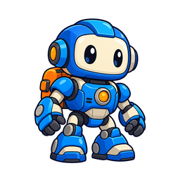
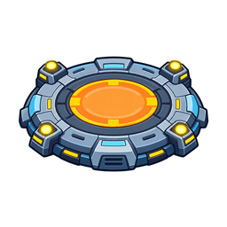
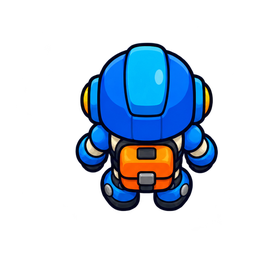
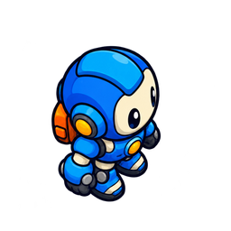
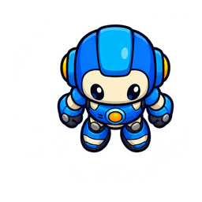
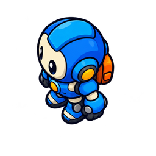

✦ spark / GAME DESIGNER
MISSION 02
Build a player that moves
Start in one file. Give your player its own state, then share your scene helpers.
01 · Predict02 · Trace03 · Explain
PLAY · THINK · CODE · CREATE · GROW
Start in one file. Give your player its own state, then share your scene helpers.
Import gives us tools; our loop decides when to use them.
import pygame
while running:
keys = pygame.key.get_pressed()
pygame.display.flip()

The loop caps dt at 0.05 seconds. speed is pixels per second.
dt = min(clock.tick(60) / 1000, 0.05) x += dx * speed * dt y += dy * speed * dt
A helper is a function for a named job. Keep it in main.py first.
def draw_scene(screen, pad, pad_position):
screen.fill("#DDF2FF")
pygame.draw.rect(screen, "#95C549", (0, 420, 800, 180))
pygame.draw.rect(screen, "#F7D34B", (80, 390, 640, 18))
screen.blit(pad, pad.get_rect(center=pad_position))The class describes a player. Calling Player(...) creates an instance.
class Player:
def __init__(self, x, y, image):
self.x = x
self.y = y
self.speed = 180
self.image = image
player = Player(160, 300, robot_image)A method is a function on an object. The call chooses the receiver.
def move(self, dx, dy, dt):
self.x += dx * self.speed * dt
self.y += dy * self.speed * dt
self.x = max(32, min(768, self.x))
self.y = max(32, min(568, self.y))
player.move(dx, dy, dt)This position-only probe uses None because it does not draw an image.
nova = Player(160, 300, None) pip = Player(500, 300, None) nova.move(1, 0, 0.05) print(nova.x, pip.x)
Keep the start and target fixed for a fair comparison.
self.speed = 240 self.x += dx * self.speed * dt
Move the two helper definitions to scene.py. Keep the loop and Player in main.py.
from scene import load_sprite, draw_scene robot_image = load_sprite(images / "robot.png", 64) draw_scene(screen, pad, pad_position) player.draw(screen)
One robot, four pictures. Camera above the floor. Direction frames are not yet a walk animation.
"up": load_sprite(images / "robot_up.png", 64),
"right": load_sprite(images / "robot_right.png", 64),
"down": load_sprite(images / "robot_down.png", 64),
"left": load_sprite(images / "robot_left.png", 64),



A dictionary pairs each direction key with an image. Load once, before the loop.
self.sprites = sprites
self.facing = "down"
image = self.sprites[self.facing]Keep this chain inside Player.move. Vertical input wins diagonals.
if dy < 0:
self.facing = "up"
elif dy > 0:
self.facing = "down"
elif dx < 0:
self.facing = "left"
elif dx > 0:
self.facing = "right"No matching branch changes facing when both inputs are zero.
self.x += dx * self.speed * dt
self.y += dy * self.speed * dt
image = self.sprites[self.facing]
rectangle = image.get_rect(center=(round(self.x), round(self.y)))
screen.blit(image, rectangle)Each object keeps its own facing. They may share the image library.
def __init__(self, x, y, sprites):
self.x = x
self.y = y
self.speed = 180
self.sprites = sprites
self.facing = "down"เริ่มไฟล์เดียว ให้ผู้เล่นมีสถานะของตน แล้วแยกตัวช่วยฉากเพื่อใช้ซ้ำ
import ทำให้มีเครื่องมือ ลูปของเรากำหนดว่าจะใช้เมื่อไร
import pygame
while running:
keys = pygame.key.get_pressed()
pygame.display.flip()ลูปจำกัด dt ที่ 0.05 วินาที speed เป็นพิกเซลต่อวินาที
dt = min(clock.tick(60) / 1000, 0.05) x += dx * speed * dt y += dy * speed * dt
helper คือฟังก์ชันสำหรับงานหนึ่งอย่าง เริ่มเก็บใน main.py ก่อน
def draw_scene(screen, pad, pad_position):
screen.fill("#DDF2FF")
pygame.draw.rect(screen, "#95C549", (0, 420, 800, 180))
pygame.draw.rect(screen, "#F7D34B", (80, 390, 640, 18))
screen.blit(pad, pad.get_rect(center=pad_position))คลาสอธิบายผู้เล่น เรียก Player(...) เพื่อสร้าง instance
class Player:
def __init__(self, x, y, image):
self.x = x
self.y = y
self.speed = 180
self.image = image
player = Player(160, 300, robot_image)เมธอดคือฟังก์ชันของออบเจ็กต์ การเรียกเลือกผู้รับคำสั่ง
def move(self, dx, dy, dt):
self.x += dx * self.speed * dt
self.y += dy * self.speed * dt
self.x = max(32, min(768, self.x))
self.y = max(32, min(568, self.y))
player.move(dx, dy, dt)ตัวอย่างนี้ไล่เฉพาะตำแหน่ง ใช้ None เพราะไม่วาดภาพ
nova = Player(160, 300, None) pip = Player(500, 300, None) nova.move(1, 0, 0.05) print(nova.x, pip.x)
คงจุดเริ่มและเป้าหมายเพื่อเทียบอย่างยุติธรรม
self.speed = 240 self.x += dx * self.speed * dt
ย้ายนิยาม helper สองตัวไป scene.py คงลูปและ Player ใน main.py
from scene import load_sprite, draw_scene robot_image = load_sprite(images / "robot.png", 64) draw_scene(screen, pad, pad_position) player.draw(screen)
หุ่นหนึ่งตัว สี่ภาพ กล้องอยู่เหนือพื้น ภาพเปลี่ยนทิศยังไม่ใช่แอนิเมชันเดิน
"up": load_sprite(images / "robot_up.png", 64),
"right": load_sprite(images / "robot_right.png", 64),
"down": load_sprite(images / "robot_down.png", 64),
"left": load_sprite(images / "robot_left.png", 64),dictionary จับคู่คีย์ทิศกับภาพ โหลดครั้งเดียวก่อนลูป
self.sprites = sprites
self.facing = "down"
image = self.sprites[self.facing]วางชุดเงื่อนไขนี้ใน Player.move แนวตั้งชนะเมื่อเดินเฉียง
if dy < 0:
self.facing = "up"
elif dy > 0:
self.facing = "down"
elif dx < 0:
self.facing = "left"
elif dx > 0:
self.facing = "right"เมื่ออินพุตทั้งสองเป็นศูนย์ ไม่มีกิ่งใดเปลี่ยน facing
self.x += dx * self.speed * dt
self.y += dy * self.speed * dt
image = self.sprites[self.facing]
rectangle = image.get_rect(center=(round(self.x), round(self.y)))
screen.blit(image, rectangle)แต่ละออบเจ็กต์เก็บ facing ของตน ใช้คลังภาพเดียวกันได้
def __init__(self, x, y, sprites):
self.x = x
self.y = y
self.speed = 180
self.sprites = sprites
self.facing = "down"